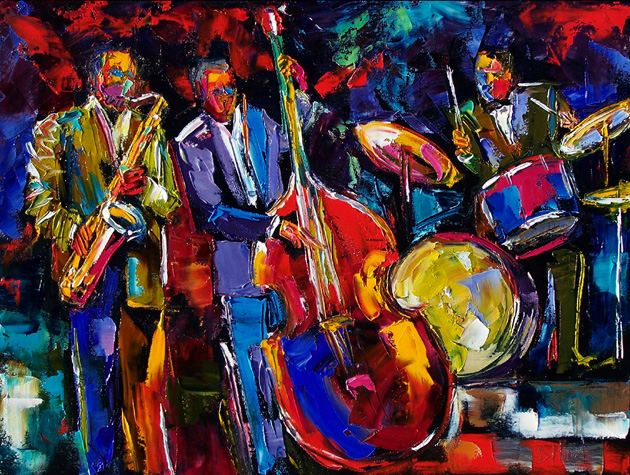
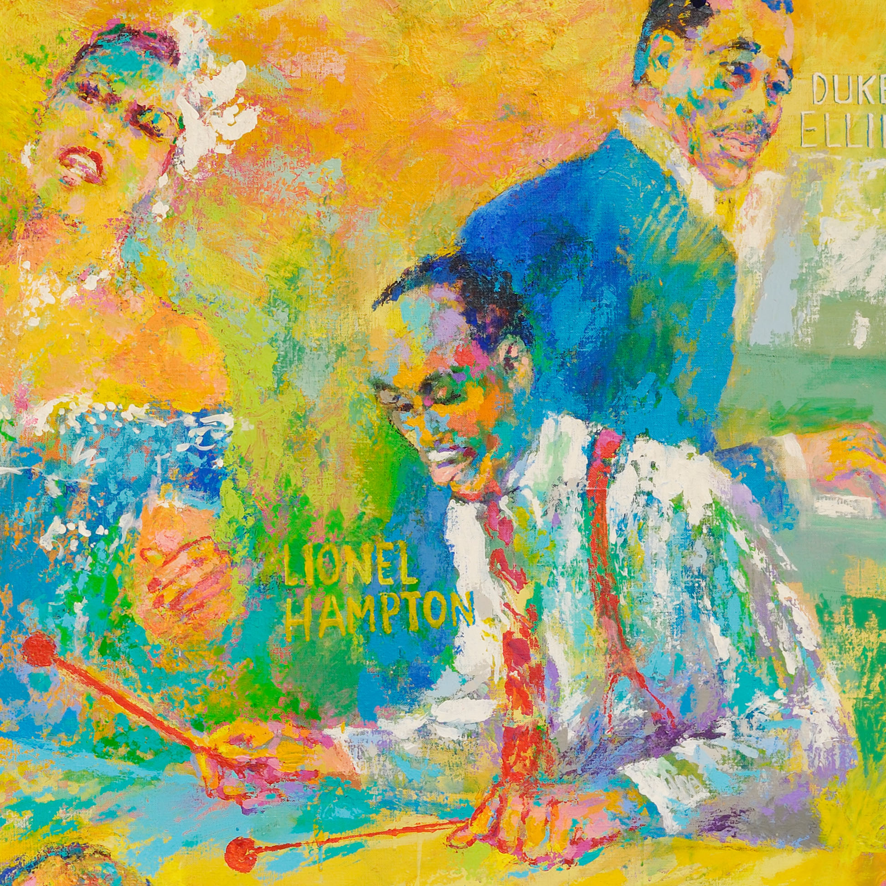

Jazz World
The history behind of how Jazz got started.

.

Jazz is a music genre that originated from African American communities of New Orleans within the U.S. throughout the late 19th and early 20th centuries. It emerged within the style of freelance traditional and well-liked musical designs, all linked by the common bonds of African American and European American musical parentage with a performance orientation. Jazz spans a amount of over 100 years, encompassing a awfully wide selection of music, creating it tough to outline. Jazz makes serious use of improvisation, polyrhythms, syncopation and also the swing note, likewise as aspects of European harmony, American popular music genre, the band tradition, and African musical parts like blue notes and African-American designs like ballroom music. Though the muse of jazz is deeply unmoving at intervals the black expertise of the U.S, totally different cultures have contributed their own expertise and designs to the music likewise. Intellectuals round the world have called jazz as "one of America's original art forms".[
The 1930s belonged to a widespread swing huge bands, in which some virtuoso soloists became as known because the band leaders. Key figures in developing the "Big" jazz band enclosed bandleaders and arrangers Count Basie, Cab Calloway, Jimmy and Tommy Dorsey, Duke Ellington, The King of Swing, Fletcher Henderson, Earl Hines, Glenn Miller, Artie Shaw, and Harry James. Though it had been a collective sound, swing also offered individual musicians an opportunity to "solo" and improvise melodic, thematic solos that might occasionally be terribly complicated and "important" music.
Jazz began to induce a name as being immoral and many members of the recent generations saw it as threatening the old cultural values and promoting the new decadent values of the Roaring 20s. prof Henry van Dyke of university wrote: "it's not music in the least. It's just associate irritation of the nerves of hearing, a sensual teasing of the strings of physical passion." The media too began to denigrate jazz. The New York Times used stories and headlines to select at jazz: Siberian villagers were aforesaid by the paper to have used jazz to intimidate bears, when really they had used pots and pans; another story claimed that the fatal heart failure of a celebrated conductor was caused by jazz.